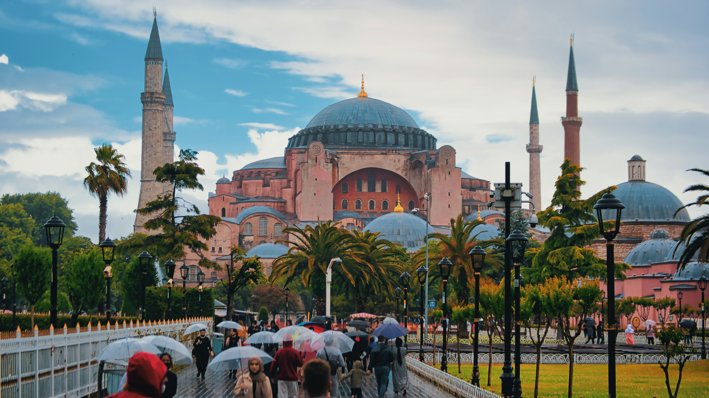
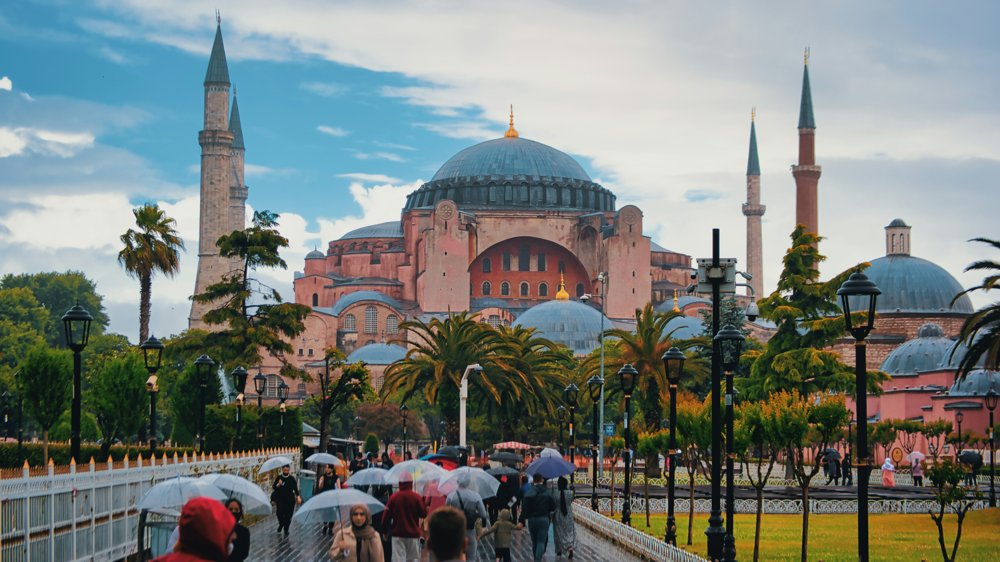

Ayasofya; İmparator Justinianos tarafından, döneminin en iyi mimarları olan İsidoros ile Anthemios’a yaptırılmıştır. 532 yılında inşasına başlanan yapı 5 yıl gibi kısa bir sürede tamamlanmıştır. 5 yıl bu büyüklükteki bir yapı için oldukça kısa bir süredir. 537 yılında yapımı tamamlanan kilise, büyük bir törenle ibadete açılmıştır. Ayasofya Kilisesi, Doğu Roma İmparatorluğu’nun İstanbul’da yapmış olduğu en büyük kilisedir. İlk ismi Megale Ekklesia (Büyük Kilise)’dır. 5. yüzyıldan itibaren kutsal bilgelik anlamına gelen “Ayasofya” ismini almıştır. Doğu Roma İmparatorluğu boyunca Ayasofya hükümdarların taç giydiği, başkentin en büyük kilisesi olarak katedral görevi görmüştür. Ayasofya, birçok kez tahribata ve yıkıma uğradı. IV. Haçlı Seferi sırasında gördüğü hasar yapının tarihinde gördüğü en büyük hasardır. 1204 yılında şehri ele geçiren şövalyeler, Ayasofya’da bulunan pek çok kutsal eşyayı yağmaladı. 1344 yılında şehirde yaşanan deprem, Ayasofya’da büyük bir yıkıma ve bir süre ibadete kapanmasına yol açtı. Halktan toplanan özel vergilerle ve bağışlarla 1354 senesinde tamir edilerek tekrar ibadete açıldı. Yapıldığı ilk günden itibaren çeşitli depremlerden zarar gören yapıya, hem Doğu Roma, hem de Osmanlı Döneminde destekleyici eklemeler yapıldı. Ayasofya’da en kapsamlı tamir çalışmaları Abdülmecid Dönemi’nde (1839-1861) Fossati tarafından yapılmıştır. Bu onarım çalışmaları kapsamında, mihrabın kuzeyinde bulunan Hünkâr Mahfili kaldırılmış, yerine mihrabın solunda, sütunlar üzerinde yükselen, etrafı ahşap yaldızlı korkuluklarla çevrili Hünkâr Mahfili yapılmıştır. Abdülaziz Dönemi’nde yapılan çevre düzenlemeleri kapsamında Ayasofya etrafındaki medrese yılları arasında yıktırılmıştır (1869-1870) ve 1873-1874 yılları arasında yeniden yaptırılmıştır. 1936 yılında yıkılmış olan medresenin kalıntıları 1982 yılında yapılan kazılarla ortaya çıkarılmıştır. Hattat Kadıasker Mustafa İzzet Efendi tarafından 7.5 metre çapındaki 8 adet hat levhası ana mekânın duvarlarına asılmıştır. “Allah, Hz. Muhammed, Hz. Ebubekir, Hz. Ömer, Hz. Osman, Hz. Ali, Hz. Hasan ve Hz. Hüseyin” yazılı bu levhalar tarihin en büyük hat levhaları olarak bilinmektedir. Aynı hat ustası merkezdeki kubbenin ortasına Nur Suresi’nin 35. ayetini yazmıştır. 1932 senesinde restorasyon çalışmaları için ibadete kapatılan Ayasofya’da, Türk hükûmetinin izniyle ABD’li bir grup bilim insanı tarafından çalışmalar yapıldı. Fatih Sultan Mehmet tarafından üzeri sıvayla kapatılan mozaikler tekrar ortaya çıkarıldı. O sıralarda Bakanlar Kurulu kararı ile yapı, müzeye çevrildi ve 1 Şubat 1935’de müze olarak ziyaretçilere açıldı.
| Doğu Roma İmp. Dönemi | Latin İmp. Dönemi | Doğu Roma İmp. Dönemi | Osmanlı İmp. Dönemi | Türkiye Cumhuriyeti Dönemi |
|---|---|---|---|---|
| 537-1204 | 1204-1261 | 1261-1453 | 1453-1923 | 1923-Günümüz |
| Ortodoks Kilisesi | Katolik Kilisesi | Ortodoks Kilisesi | Camii | Camii - Müze - Camii |
1991 yılında Cumhurbaşkanı Turgut Özal döneminde Ayasofya Müzesi'nin bir bölümü cami olarak Müslümanların ibadetine açılmıştır.[39] Ayasofya'nın tekrar cami olma süreci ilk olarak 2005 yılında başladı, 2005 yılında yargıya taşınan olay Danıştay 10. Dairesi tarafından reddedildi.[40] 2016'da tekrar açılan dava da Haziran 2018'de açıklanan karar ile aynı şekilde sonuçsuz kaldı.[40] Temmuz 2016'da Ayasofya Müzesi'nde düzenlenen Kadir Gecesi programında, 85 yıl aradan sonra sabah namazında ezan okundu.[41] Diyanet TV'nin Ramazan ayı boyunca Ayasofya'dan "Bereket Vakti Ayasofya" adlı sahur programını ekranlara getirmesine Yunanistan'dan tepki geldi.[42] Ekim 2016'da müzenin Müslüman ibadetine açık olan bölümü Hünkar Kasrı'na, Diyanet İşleri Başkanlığı tarafından uzun yıllardan sonra ilk kez asaleten imam atandı.[43] 2016 itibarıyla Hünkar Kasrı bölümünde vakit namazlar kılınmaya ve minarelerinden Sultanahmet Camii ile 5 vakit çifte ezan okunmaya başlandı.[44] 29 Mayıs 2020 tarihinde İstanbul'un Fethinin 567. yıl dönümünde Fetih Suresi okundu.[45] Bu gelişmelerin ardından Ayasofya'nın cami olma süreci tekrar gündeme geldi.[46] Sürekli Vakıflar Tarihi Eserlere ve Çevreye Hizmet Derneği'nin "Ayasofya'nın camiden müzeye dönüştürülmesine yönelik Bakanlar Kurulu kararının iptali" istemiyle Danıştay'da dava açması üzerine 2 Temmuz 2020 tarihinde duruşma gerçekleştirildi ve 10 Temmuz 2020 tarihinde Danıştay 10. Dairesi, Ayasofya'nın camiden müzeye dönüştürülmesine dair 24 Kasım 1934 tarihli Bakanlar Kurulu kararını "Ayasofya'nın vakıf senedindeki cami vasfı dışında kullanımının ve başka bir amaca özgülenmesinin hukuken mümkün olmadığını" belirterek iptal etti.[47] Bunun üzerine 2729 numaralı cumhurbaşkanı kararı ile Ayasofya, Diyanet İşleri Başkanlığına devredilerek tekrar cami statüsüne dönmüş oldu.[48][49] Bu gelişme sonrası UNESCO, Dünya Mirası listesinde yer alan Ayasofya'nın korunma statüsünün gözden geçirileceğini açıkladı.[50] 2022 yılında 13 milyon 635 bin 229 kişinin Ayasofya'yı ziyaret ettiği açıklanmıştır.[51]
Ayasofya’nın ölçüleri 100×70 m’dir ve yaklaşık 7500 m²’lik bir iç alana sahiptir. İki katlı bir yapısı vardır. 40 tanesi alt katta 67 tanesi üst kattaki galeri kısmında olmak üzere içinde toplam 107 adet sütun vardır. Sütunların en uzunları yaklaşık 20 metredir. Sütunların yarıçapı 1,5 metre ve tahmini ağırlığı 70 tondur. Yapıda kullanılan sütunların çoğu, binadan daha eskidir. Bunun nedeni, kullanılan sütunların Anadolu’daki çeşitli yerlerindeki farklı mabetlerden getirtilmiş olmasıdır. Bizans döneminde yıkılan kubbe yeniden tamir edilmiştir. Bu sebeple kubbe tam yuvarlak değil, elips şekline daha yakındır ve iki farklı yarıçapı vardır. Kubbe çapı 30.80 ile 32.6 metredir. Kubbe yüksekliği ise 55.60 metredir.
Some quick example text to build on the card title and make up the bulk of the card's content.
Some quick example text to build on the card title and make up the bulk of the card's content.
Some quick example text to build on the card title and make up the bulk of the card's content.
Some quick example text to build on the card title and make up the bulk of the card's content.
Some quick example text to build on the card title and make up the bulk of the card's content.